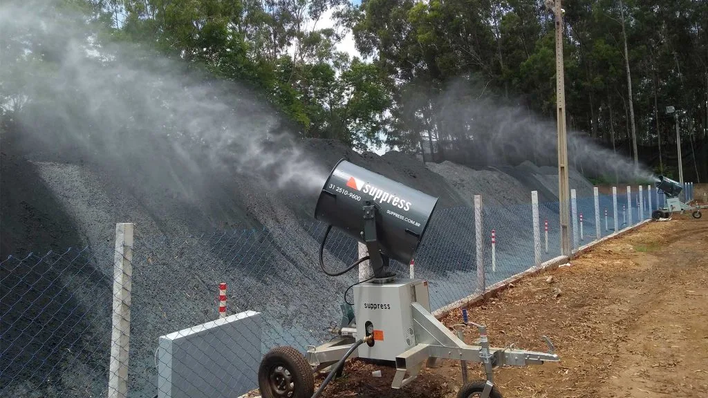

Canhões de Névoa para Supressão de Poeira Industrial
Como a atomização de água no ar resolve o que a aspersão no solo não consegue controlar.

Os canhões de névoa são hoje uma das tecnologias mais eficientes para a supressão de poeira em ambientes industriais, mineradores, portuários e obras de grande porte. Ao atuar diretamente no ar, no ponto onde o material particulado é gerado, esses sistemas oferecem um controle muito mais eficaz do que métodos tradicionais baseados apenas na umidificação do solo.
A poeira em suspensão não é apenas um incômodo visual: ela afeta diretamente a saúde ocupacional, compromete a eficiência operacional, acelera o desgaste de equipamentos e pode gerar conflitos com órgãos ambientais e comunidades do entorno. Nesse contexto, os canhões de névoa surgem como uma solução tecnológica estratégica, alinhada às exigências ambientais atuais, às práticas de ESG e à necessidade de operações mais seguras, limpas e sustentáveis.
O que é poeira em suspensão e por que ela é um problema crítico
A poeira em suspensão é formada por partículas sólidas extremamente finas, com granulometria pequena o suficiente para permanecerem no ar por longos períodos. Diferentemente das partículas mais grossas, que sedimentam rapidamente, essas partículas finas podem ser transportadas por grandes distâncias, ampliando sua área de impacto. Esse tipo de poeira é o mais difícil de controlar porque:
- Não se deposita rapidamente no solo
- É altamente influenciada pelo vento
- Atinge áreas além do limite da operação
Em ambientes industriais abertos, como minas a céu aberto, pátios de estocagem, terminais portuários e obras de grande porte, o problema se intensifica devido à combinação de grandes áreas expostas, movimentação constante de material e condições climáticas variáveis.
Principais impactos da poeira em suspensão
Saúde ocupacional
A exposição contínua ao material particulado fino pode causar irritações nas vias respiratórias, crises alérgicas e asmáticas, doenças respiratórias crônicas e aumento de afastamentos. Populações externas às unidades industriais, como crianças e idosos, são ainda mais vulneráveis, pois não utilizam Equipamentos de Proteção Individual.
Meio ambiente e comunidades vizinhas
A poeira em suspensão pode se depositar sobre vegetação, corpos d'água, solo e áreas de preservação ambiental, resultando em restrições operacionais e exigências de mitigação adicionais. É também uma das principais causas de reclamações formais e desgaste da imagem institucional junto às comunidades do entorno.
Operação industrial e exigências regulatórias
Do ponto de vista operacional, a poeira reduz a visibilidade e a segurança, acelera o desgaste de máquinas e pode comprometer a qualidade do produto final. No Brasil, normas como a NR-15 estabelecem limites de exposição ocupacional a agentes químicos, incluindo poeiras minerais, tornando o controle de emissões fugitivas uma exigência legal, e não apenas uma boa prática.
Por que apenas molhar o solo não resolve o problema
Uma prática comum ainda adotada em muitas operações é tentar controlar a poeira por meio da aspersão direta de água no solo ou sobre pilhas de material. Essa abordagem pode ajudar a reduzir a geração da poeira, mas apresenta eficiência praticamente nula quando o material particulado já está em suspensão no ar, porque:
- As gotas de água convencionais são muito maiores que as partículas de poeira
- O impacto da água tende a empurrar a poeira lateralmente
- Há aumento significativo do consumo de água sem abatimento efetivo do particulado no ar
Como funcionam os canhões de névoa
Os canhões de névoa operam com um princípio físico simples e altamente eficiente: a gotícula de água precisa ter tamanho compatível com a partícula de poeira. Quando isso ocorre, há aderência entre a gota e a partícula sólida, o conjunto ganha peso e decanta rapidamente, retirando o material particulado do ar antes que ele se disperse. Para entender melhor por que esse princípio supera a aspersão tradicional, vale comparar diretamente as duas tecnologias em canhão de névoa x aspersores: qual a diferença.
A tecnologia combina bombas de alta pressão, bicos projetados para atomização controlada, geração de microgotas e ventilação forçada para projeção a longas distâncias, com baixo consumo de água em comparação a métodos tradicionais.
Impactação inercial: a física por trás da captura de partículas maiores
O mecanismo dominante na captura de partículas de poeira mais grossas, aquelas com massa suficiente para ter inércia significativa, é conhecido como impactação inercial. Quando uma gotícula de névoa se desloca pelo ar e uma partícula de poeira está em sua trajetória, a partícula tende a manter sua linha de movimento por inércia, enquanto o ar ao redor da gota é defletido. Se a partícula for grande o suficiente, ela não consegue "desviar" junto com o fluxo de ar e acaba colidindo com a gotícula. Esse é o motivo pelo qual o dimensionamento da gota é tão importante: gotas grandes demais geram um campo de fluxo de ar que partículas finas conseguem contornar sem colidir, enquanto gotas no diâmetro correto maximizam a probabilidade de choque.
Difusão browniana: como a névoa captura partículas finas e respiráveis
Para as partículas mais finas, da fração respirável, capaz de penetrar profundamente nas vias respiratórias, a impactação inercial perde eficiência, porque essas partículas têm massa tão pequena que seguem fielmente as linhas de fluxo do ar e tendem a contornar a gotícula em vez de colidir com ela. Nesse caso, entra em ação um segundo mecanismo: a difusão browniana, o movimento aleatório que partículas microscópicas sofrem por colisões constantes com as moléculas de ar. Esse movimento errático aumenta a probabilidade de a partícula fina encontrar a superfície da gotícula de água mesmo sem estar diretamente na sua trajetória. É justamente a combinação dos dois mecanismos, impactação inercial para partículas maiores e difusão browniana para as mais finas, que faz da névoa atomizada uma solução tecnicamente superior à aspersão convencional, cujas gotas grosseiras praticamente não interagem com material fino em suspensão.
Poeira sedimentável x poeira em suspensão: por que a distinção importa no projeto da solução
Nem toda poeira se comporta da mesma forma, e essa diferença é determinante na escolha da tecnologia de controle. A poeira sedimentável é composta por partículas relativamente grandes e pesadas, que se depositam no solo em minutos ou poucas horas após serem geradas, é o tipo de poeira que se vê acumulada sobre superfícies, veículos e equipamentos. Já a poeira em suspensão, à qual pertence a fração respirável, é formada por partículas finas o suficiente para permanecer suspensas no ar por horas ou até dias, sendo transportada pelo vento para muito além do limite da operação.
Sistemas de aspersão no solo atuam principalmente sobre a fração sedimentável, umedecendo a superfície para evitar que a poeira seja gerada ou ressuspensa. Mas, uma vez que a partícula fina já está no ar, a aspersão no solo não tem mecanismo de ação sobre ela, é necessário tratar o ar diretamente, que é exatamente o papel dos canhões de névoa. Por isso, operações que lidam com geração intensa de material particulado fino, como britagem, peneiramento e moagem, normalmente combinam as duas abordagens: aspersão para controle da fração sedimentável na fonte e canhões de névoa para captura da fração respirável já dispersa no ar.
Onde os canhões de névoa podem ser aplicados
- Basculamento e carregamento de caminhões
- Pátios de estocagem e centros de distribuição
- Plantas de britagem e classificação de minérios
- Galpões industriais e áreas confinadas
- Portos e terminais de granéis
- Obras de terraplenagem e construção civil
- Demolições urbanas e industriais
Dimensionamento correto: alcance e recursos
O dimensionamento adequado é fundamental para o sucesso da supressão de poeira. Um dos principais critérios é o alcance da névoa, determinado pela potência da turbina e pela configuração do equipamento:
- 15 metros: aplicações localizadas e áreas confinadas
- 35 metros: plantas industriais de pequeno porte
- 60 metros: mineração e pátios médios
- Até 150 metros: grandes áreas abertas
Os equipamentos modernos contam ainda com sistema de filtragem de água, giro automático, ajuste de ângulo vertical e controle remoto ou integração com salas de controle. Para entender com mais detalhe como o alcance é calculado e quais fatores de campo influenciam o resultado real, veja qual o alcance da névoa dos canhões Suppress.
Critérios técnicos para escolher o equipamento ideal
Definir o canhão de névoa correto para uma operação vai além de escolher o maior alcance disponível. É um exercício de engenharia que cruza diferentes variáveis de campo:
- Vazão de água necessária: depende do volume de material movimentado e da intensidade de geração de poeira na fonte. Operações de alta movimentação, como pátios de transbordo e plantas de britagem de grande porte, costumam exigir equipamentos de maior vazão.
- Área a ser coberta: pátios extensos ou frentes de lavra abertas demandam maior alcance e, frequentemente, mais de um equipamento posicionado estrategicamente, em vez de um único canhão operando no limite da sua capacidade.
- Direção predominante do vento: o posicionamento do canhão deve considerar a rosa dos ventos local, projetando a névoa para interceptar a pluma de poeira antes que ela ultrapasse os limites da operação.
- Característica do material particulado: operações com predominância de fração respirável fina exigem maior atenção à granulometria da gota, já que partículas finas dependem mais da difusão browniana do que do impacto direto.
Quando a operação foge do padrão, geometria de pátio irregular, múltiplos pontos de geração simultânea ou necessidade de integração com estruturas já existentes, o caminho mais seguro é um projeto sob medida, como o descrito em soluções personalizadas para abatimento de poeira, em que o dimensionamento parte do levantamento real de campo. Já em operações de altíssima movimentação, como grandes minas e portos graneleiros, a vazão necessária pode superar a capacidade de um único canhão de porte médio, um exemplo prático desse tipo de demanda está em canhões de névoa de alta vazão.
Operação e manutenção: o que garante a vida útil do equipamento
Um canhão de névoa é de uso contínuo, frequentemente exposto a ambientes agressivos, poeira abrasiva, umidade, variação de temperatura e, em alguns casos, atmosferas corrosivas. Sua vida útil e confiabilidade dependem de rotinas básicas de operação e manutenção. A qualidade da água de alimentação é um fator crítico: como a atomização depende de bicos com orifícios de precisão, água com sólidos em suspensão pode obstruí-los, comprometendo a granulometria da gota e a eficácia da captura, por isso a filtragem na entrada de água, com limpeza periódica, é parte essencial da rotina, não um item opcional. Inspeções regulares de bicos, bombas, mangueiras, sistema de giro e estrutura mecânica evitam paradas não programadas e prolongam a vida útil do equipamento, com atenção especial à limpeza externa e ao desgaste de componentes móveis como o giro automático e o ajuste de ângulo.
Equipamentos modernos também permitem operação remota e integração com sistemas de automação industrial, possibilitando acionamento programado, ajuste de ângulo e monitoramento a partir de salas de controle centralizadas. Essa integração reduz a dependência de operação manual local, permite resposta mais rápida a mudanças nas condições de vento e facilita o registro de dados operacionais para fins de conformidade ambiental.
Soluções móveis para combate emergencial
Situações não planejadas fazem parte da rotina industrial: manutenções, falhas em sistemas fixos e intervenções emergenciais. A Suppress desenvolveu módulos móveis de combate à poeira, compostos por canhão de névoa, gerador, tanque de água e trailer ou caminhão dedicado, permitindo resposta rápida sem interromper a operação. Conhecer toda a linha de equipamentos disponíveis, fixos e móveis, incluindo modelos de longo alcance como o SP-150, indicado para as áreas mais extensas, ajuda a entender qual configuração se encaixa melhor em cada etapa da operação. Veja o portfólio completo em canhões de névoa Suppress.
Perguntas Frequentes
Qual a diferença entre canhão de névoa e aspersão convencional?
A aspersão convencional lança gotas grandes que atuam principalmente sobre o solo e pilhas de material, sem capturar de forma eficiente a poeira já dispersa no ar. O canhão de névoa atomiza a água em microgotas dimensionadas para colidir e aderir às partículas em suspensão, retirando-as do ar pela ação combinada de impactação inercial e difusão browniana.
Como é definido o alcance e o dimensionamento do equipamento?
O alcance depende da potência da turbina e da configuração dos bicos, variando de cerca de 15 a 150 metros conforme o modelo. O dimensionamento correto, no entanto, também considera a vazão necessária para o volume de material movimentado, a área total a cobrir e a direção predominante do vento na operação.
Os canhões de névoa consomem muita água?
Não. Por operarem com atomização controlada e gotas dimensionadas para máxima eficiência de captura, os canhões de névoa consomem significativamente menos água do que sistemas de aspersão tradicionais para alcançar o mesmo nível de controle de poeira em suspensão.
Conclusão
O controle eficiente da poeira não é apenas uma exigência legal: é um compromisso com a saúde das pessoas, com o meio ambiente e com a sustentabilidade das operações industriais. Os canhões de névoa representam uma solução madura, eficiente e tecnicamente validada, permitindo que o desenvolvimento industrial avance com impactos ambientais significativamente reduzidos.
Sua operação enfrenta desafios com poeira em suspensão?
Receba uma análise técnica personalizada com base na realidade da sua operação.
Solicitar Proposta